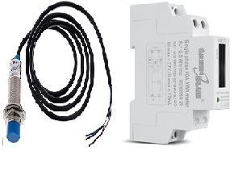
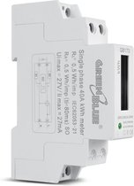
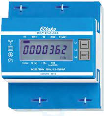
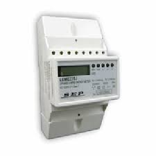
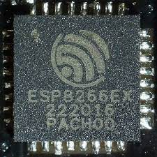

Installation
Pre-requisite: Make sure you have installed the drivers for the Wemos d1 to communicate with your pc / laptop. Look
for it at the troubleshooting page.
And you must connect the S0tool to your pc or laptop with a cable that transfers both power and data.
You can use the button below to install the S0tool firmware directly to your device via USB from the
browser.
S0tool Installation
Pick your product to turn it into a S0tool for Home Assistant.
No programming or other software required.
s0tool-standard
Standard with watermeter(npn) and kWh meter imp(50-100ms)
D2 & D5

s0tool watermeter
Standard with watermeter(npn)
D2

S0tool kWh meter
Standard with kWh meter imp(50-100ms)
D5

S0tool dsz12d
Special for the dsz12d
D5

S0tool lem022sj
Special for the lem022sj 400imp
D5

S0tool s0-watermeter
Special for the digital s0-watermeter devices
D2
S0tool flux and puls
Special for flow sensor and puls sensor
D2
S0tool wsz15d32a and water
Special for the wsz15d32a imp(30ms) and watermeter(npn)
D5

S0tool sdm72d and water
Special for the sdm72d imp(35ms) and watermeter(npn)
D2 & D5

S0tool puls-water-internal
Special for the kwh and watermeter(npn) with Internal resistor in the code
D2 & D5
S0tool kwh-water-test
Special for the kwh and watermeter(npn) test with debug mode on
D2 & D5
S0tool blank
Wipes the hole esp8266

Its possible now to adjust the kWh puls rate settings from Home Assistant dashboard an it stays on your setting with reboot and after updating the firmware.
The combinations are possible between 10 and 4000 puls/kWh with steps of 10 pulses.
Special versions .
Only needed if the kWh counter has a impulse length other than between the 50 an 100ms on the datasheet. Or versions
for a other watermeter.